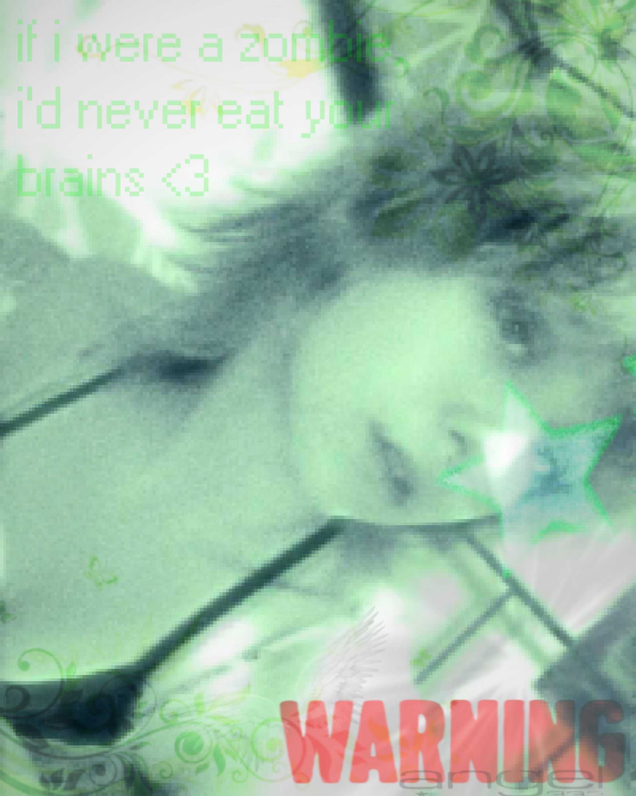
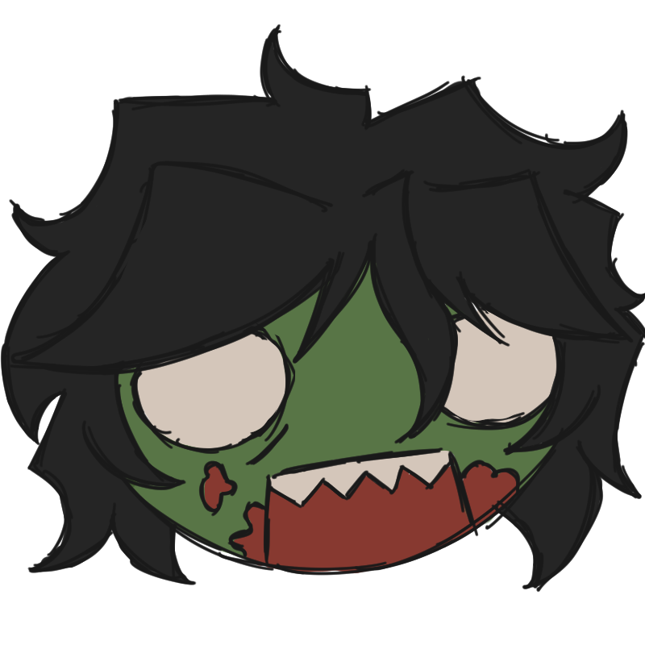
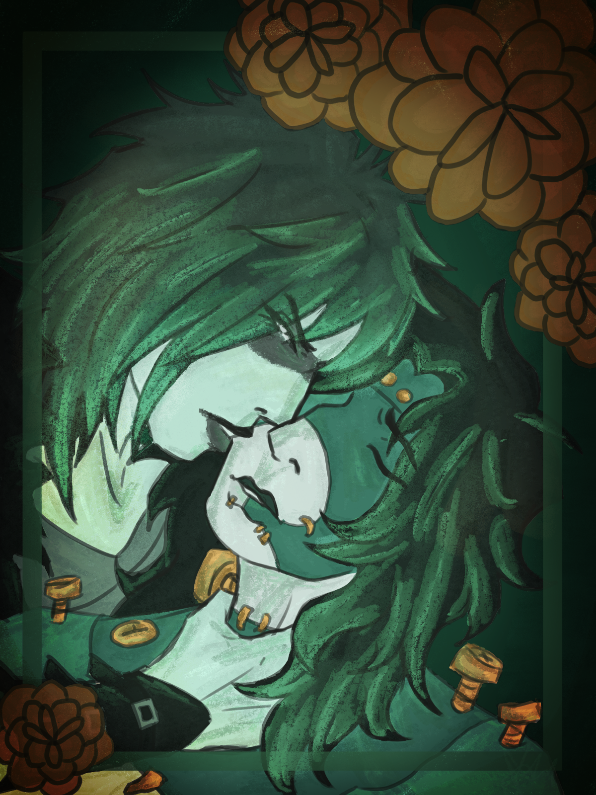
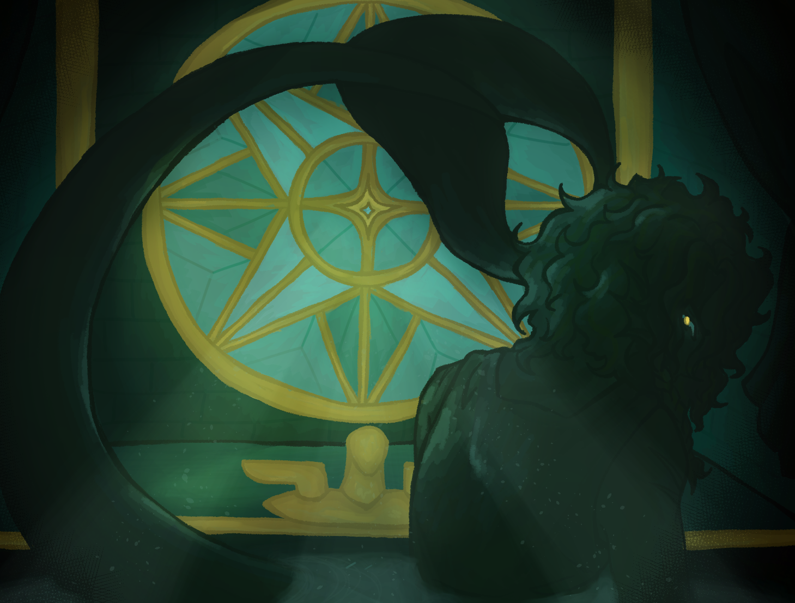
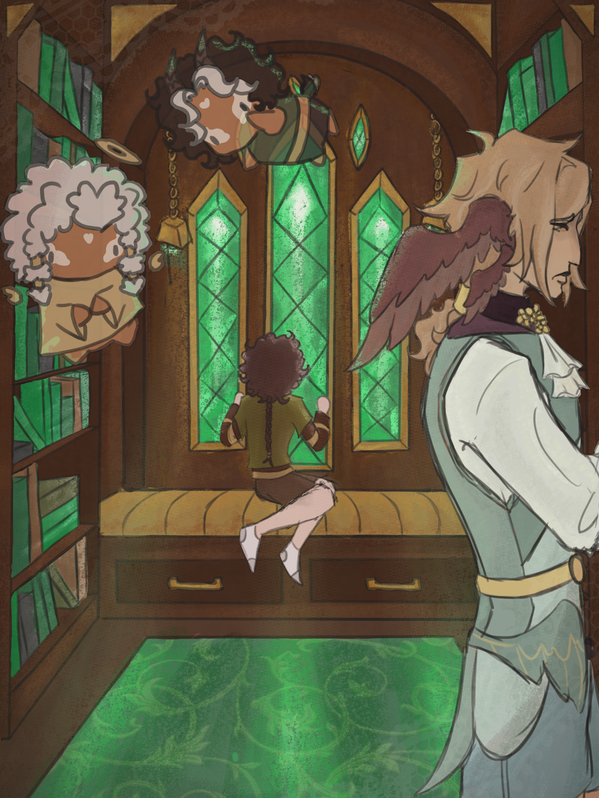
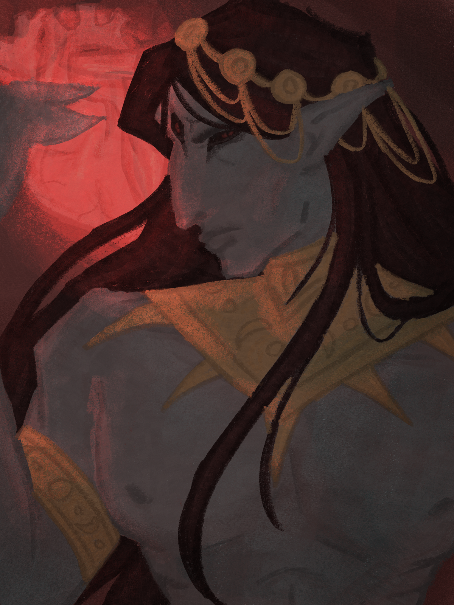
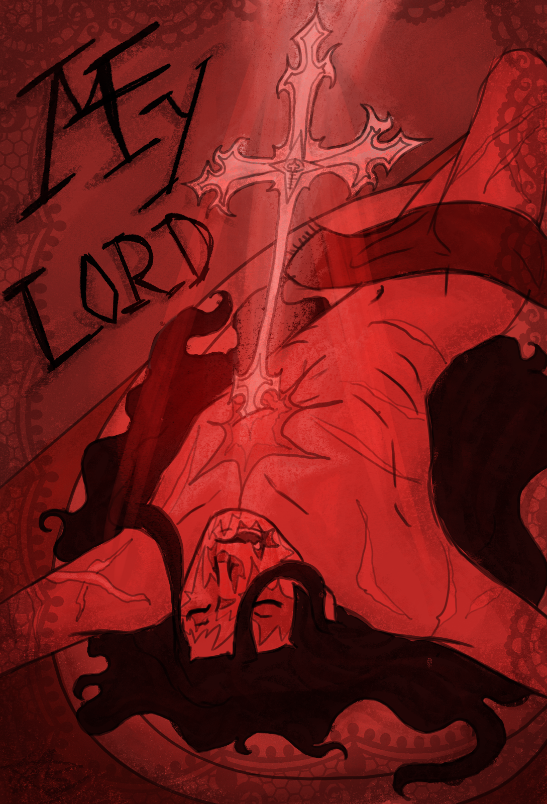
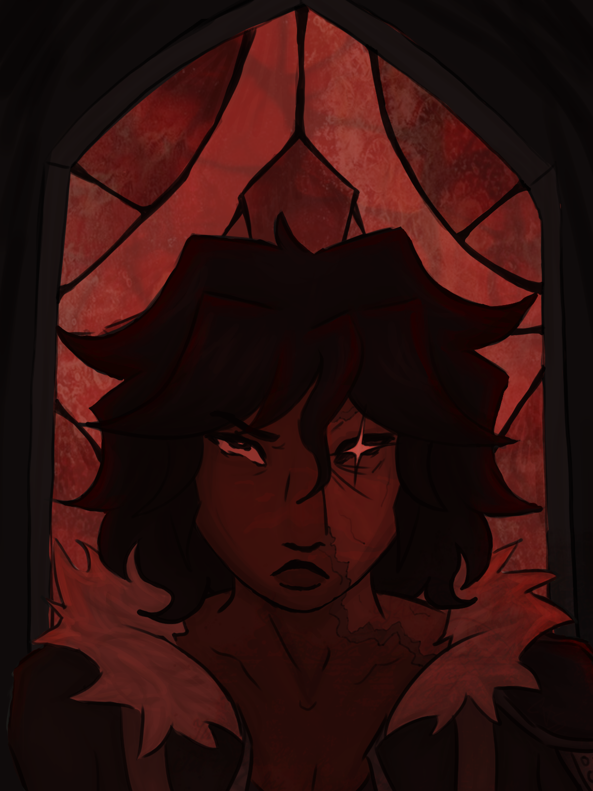

A big part of Hollie's life is getting to make stories. Ever since she was little she was developing her own worlds and characters. This creative outlet has carried with her and now one of her biggest goals is getting to make and publish her very own comic.
For the last three and a half years she's poured her heart into a post apocalyptic story. Developing the setting and characters and building her skills to achieve her dreams. Which was what led her to Lethbridge Polytechnic. She plans to take her knowledge from her education there to take her next steps forward. Since the program included a variety of classes it really drew her in, since she'd gain experience in all kinds of creative fields.
Outside of school she spends her time working on a variety of stories, and rewatching her favourite shows. Which happen to be The Walking Dead , and Good Omens.


This was a piece she made for one of her friends, it features their friends original characters Tork and Mania. She drew them because Tork, the character on the right, reminds her of a zombie since in his lore he was resurrected.

She made this for her boyfriend, in the artwork there is a siren character named Nerinora. What inspired this piece was the fact that Neri is so green, which happens to be a favourite colour of Hollie's.

This artwork features her own original characters, they're from a story about angel's and demon's called All or Nothing. She tried to pull herself out of her comfort zone with this one, playing with the digital media in ways she hadn't before.

This was fanart made of the game Morrowind, specifically the game's antagonist Dagoth Ur.

In this illustration it features a character named Spade, in his story he struggles with religion and his ties to a cult. Hollie really loves to delve into topics such as these because of her own experiences.

This is a character of Hollie's and he is her personal favourite. He is in her apocalypse story called Survival of the Damned and is the main antagonist.
For Hollie there has always been an interest in the idea of zombies. Some of her favourite childhood movies included the creatures and the love for them never seemed to flicker out. As mentioned before a lot of different shows and comics have inspired her. Their influence seen in her work. She loves to compare the different ways media portrays the monsters, and how the viruses even happen to begin with.
She also finds herself coming back to religious concepts, turning and shaping them into her own. She loves to explore the idea's of afterlife and how supernatural creatures would work in such settings. Though this particular interest was developed more recently than the zombie's it is still just as strong.